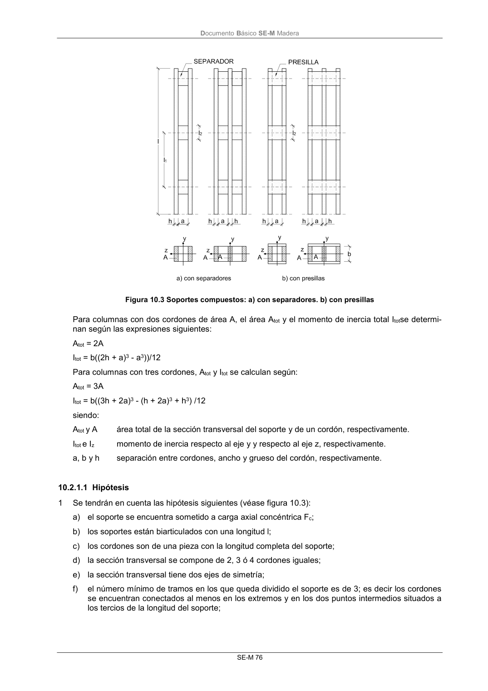

DB-SE-M Madera · edición 2019-12-20 · capa oficial
Documento DB-SE-M-oficial · SHA-256 del PDF 26b5819839ebfda78b0b119c5e76a0a37773b0d763c05688541870075df93718
Página física 82 de 132.
Copia fiel del PDF fuente · Fuente oficial
Ficha de la disposición en la fuente oficial
Formato: Texto de la página (Markdown)
Documento Básico SE-M Madera SE-M 76 Figura 10.3 Soportes compuestos: a) con separadores. b) con presillas Para columnas con dos cordones de área A, el área Atot y el momento de inercia total Itotse determi- nan según las expresiones siguientes: Atot = 2A Itot = b((2h + a)3 - a3))/12 Para columnas con tres cordones, Atot y Itot se calculan según: Atot = 3A Itot = b((3h + 2a)3 - (h + 2a)3 + h3) /12 siendo: Atot y A área total de la sección transversal del soporte y de un cordón, respectivamente. Itot e Iz momento de inercia respecto al eje y y respecto al eje z, respectivamente. a, b y h separación entre cordones, ancho y grueso del cordón, respectivamente. 10.2.1.1 Hipótesis 1 Se tendrán en cuenta las hipótesis siguientes (véase figura 10.3): a) el soporte se encuentra sometido a carga axial concéntrica Fc; b) los soportes están biarticulados con una longitud l; c) los cordones son de una pieza con la longitud completa del soporte; d) la sección transversal se compone de 2, 3 ó 4 cordones iguales; e) la sección transversal tiene dos ejes de simetría; f) el número mínimo de tramos en los que queda dividido el soporte es de 3; es decir los cordones se encuentran conectados al menos en los extremos y en los dos puntos intermedios situados a los tercios de la longitud del soporte;
